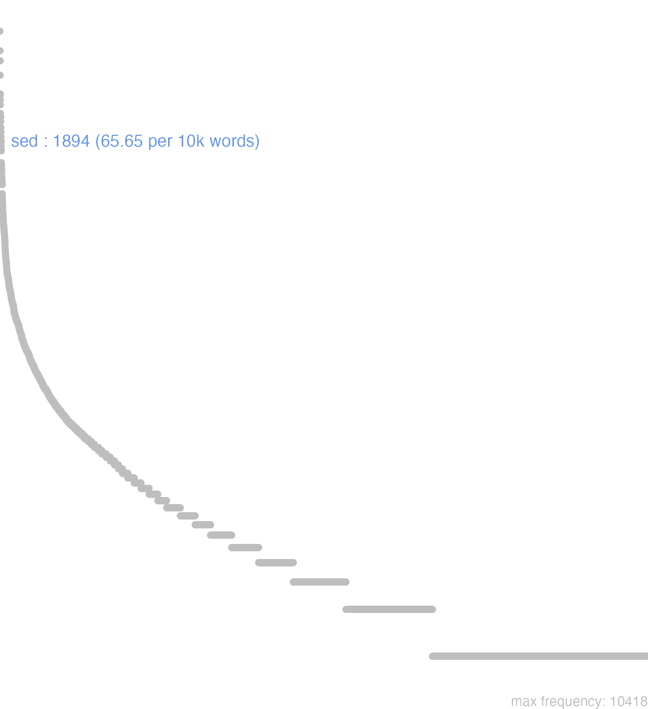

158 sed
158.0.0.1 bases lexicais
id: http://lila-erc.eu/data/id/lemma/123994
classe: conjunção coordenativa
paradigma: indeclinável
outras grafias: sedum, set
variantes do lema:
no data
sĕd
no data
158.0.0.2 dicionários tradicionais
sed
conj.
Obs.: Na língua antiga sed ou se funcionava como prep., sendo neste emprego substituída por sine na língua literária. Nos textos literários sed, se ou so aparecem como prevérbio, indicando a separação, o afastamento, a privação: seditio, sedulo, secedo, sepono, socors.
conj.
Obs.: Na língua antiga sed ou se funcionava como prep., sendo neste emprego substituída por sine na língua literária. Nos textos literários sed, se ou so aparecem como prevérbio, indicando a separação, o afastamento, a privação: seditio, sedulo, secedo, sepono, socors.
1 Mas, porém Cíc. Mil. 59.
2 Notem-se as expressões:
3 Iniciando ou voltando a um assunto:
4 Ora, mas também Verg. En. 10. 576.
[EXEMPLOS]
2
a non solum … sed. nom modo… sed “não somente … mas”. b sed etiam Cíc. Mil. 61 ‘mas também, mas ainda’. c sed tamen Cíc. Phil. 2. 104 “mas em todos os casos”.
3
sed redeamus ad hortensium Cíc. Br. 291 “mas voltemos a Hortênsio”.
no data
Sed
conj.
conj.
1 Cic. mas, porém.
no data
Sed
coniunctio.
coniunctio.
1 porem
158.0.0.3 dados de corpus
![This chart plots collocate by scoreSUBST, for the headword sed here are all the values plotted: collocate: etiam; scoreSUBST: 0. collocate: tamen; scoreSUBST: 0. collocate: ne; scoreSUBST: 0. collocate: ut; scoreSUBST: 0. collocate: hic; scoreSUBST: 0. collocate: ego; scoreSUBST: 0. collocate: solum; scoreSUBST: 0. collocate: omnis; scoreSUBST: 0. collocate: quia; scoreSUBST: 0. collocate: ita; scoreSUBST: 0. collocate: iam; scoreSUBST: 0. collocate: uideo; scoreSUBST: 0. collocate: quoniam; scoreSUBST: 0. collocate: uiuo; scoreSUBST: 0. collocate: tantum; scoreSUBST: 0. collocate: ubi; scoreSUBST: 0. collocate: scio; scoreSUBST: 0. collocate: debeo; scoreSUBST: 0. collocate: postquam; scoreSUBST: 0. collocate: nescio; scoreSUBST: 0. collocate: tamquam; scoreSUBST: 0. collocate: credo; scoreSUBST: 0. collocate: uereor; scoreSUBST: 0. collocate: uerbum; scoreSUBST: 1. collocate: sentio; scoreSUBST: 0. collocate: plerusque; scoreSUBST: 0. collocate: iustus; scoreSUBST: 0. collocate: cupiditas; scoreSUBST: 2. collocate: delecto; scoreSUBST: 0. collocate: cur; scoreSUBST: 0. collocate: ecce; scoreSUBST: 0. collocate: mehercule; scoreSUBST: 0. collocate: desero; scoreSUBST: 0. collocate: naturalis; scoreSUBST: 0. collocate: abicio; scoreSUBST: 0. collocate: proficio; scoreSUBST: 0. collocate: paene; scoreSUBST: 0. collocate: attingo; scoreSUBST: 0. collocate: recuso; scoreSUBST: 0. collocate: utilitas; scoreSUBST: 2. collocate: perfero; scoreSUBST: 0. collocate: odi; scoreSUBST: 0. collocate: plenus; scoreSUBST: 0. collocate: profecto; scoreSUBST: 0. collocate: exeo; scoreSUBST: 0](./Media/wordcloud__xx115-101-100xx__BY_collocate_scoreSUBST.webp)
![This chart plots collocate by scoreADJ, for the headword sed here are all the values plotted: collocate: etiam; scoreADJ: 0. collocate: tamen; scoreADJ: 0. collocate: ne; scoreADJ: 0. collocate: ut; scoreADJ: 0. collocate: hic; scoreADJ: 0. collocate: ego; scoreADJ: 0. collocate: solum; scoreADJ: 0. collocate: omnis; scoreADJ: 0. collocate: quia; scoreADJ: 0. collocate: ita; scoreADJ: 0. collocate: iam; scoreADJ: 0. collocate: uideo; scoreADJ: 0. collocate: quoniam; scoreADJ: 0. collocate: uiuo; scoreADJ: 0. collocate: tantum; scoreADJ: 0. collocate: ubi; scoreADJ: 0. collocate: scio; scoreADJ: 0. collocate: debeo; scoreADJ: 0. collocate: postquam; scoreADJ: 0. collocate: nescio; scoreADJ: 0. collocate: tamquam; scoreADJ: 0. collocate: credo; scoreADJ: 0. collocate: uereor; scoreADJ: 0. collocate: uerbum; scoreADJ: 0. collocate: sentio; scoreADJ: 0. collocate: plerusque; scoreADJ: 0. collocate: iustus; scoreADJ: 2. collocate: cupiditas; scoreADJ: 0. collocate: delecto; scoreADJ: 0. collocate: cur; scoreADJ: 0. collocate: ecce; scoreADJ: 0. collocate: mehercule; scoreADJ: 0. collocate: desero; scoreADJ: 0. collocate: naturalis; scoreADJ: 2. collocate: abicio; scoreADJ: 0. collocate: proficio; scoreADJ: 0. collocate: paene; scoreADJ: 0. collocate: attingo; scoreADJ: 0. collocate: recuso; scoreADJ: 0. collocate: utilitas; scoreADJ: 0. collocate: perfero; scoreADJ: 0. collocate: odi; scoreADJ: 0. collocate: plenus; scoreADJ: 2. collocate: profecto; scoreADJ: 0. collocate: exeo; scoreADJ: 0](./Media/wordcloud__xx115-101-100xx__BY_collocate_scoreADJ.webp)
![This chart plots collocate by scoreVERBO, for the headword sed here are all the values plotted: collocate: etiam; scoreVERBO: 0. collocate: tamen; scoreVERBO: 0. collocate: ne; scoreVERBO: 0. collocate: ut; scoreVERBO: 0. collocate: hic; scoreVERBO: 0. collocate: ego; scoreVERBO: 0. collocate: solum; scoreVERBO: 0. collocate: omnis; scoreVERBO: 0. collocate: quia; scoreVERBO: 0. collocate: ita; scoreVERBO: 0. collocate: iam; scoreVERBO: 0. collocate: uideo; scoreVERBO: 1. collocate: quoniam; scoreVERBO: 0. collocate: uiuo; scoreVERBO: 2. collocate: tantum; scoreVERBO: 0. collocate: ubi; scoreVERBO: 0. collocate: scio; scoreVERBO: 1. collocate: debeo; scoreVERBO: 1. collocate: postquam; scoreVERBO: 0. collocate: nescio; scoreVERBO: 2. collocate: tamquam; scoreVERBO: 0. collocate: credo; scoreVERBO: 1. collocate: uereor; scoreVERBO: 2. collocate: uerbum; scoreVERBO: 0. collocate: sentio; scoreVERBO: 1. collocate: plerusque; scoreVERBO: 0. collocate: iustus; scoreVERBO: 0. collocate: cupiditas; scoreVERBO: 0. collocate: delecto; scoreVERBO: 2. collocate: cur; scoreVERBO: 0. collocate: ecce; scoreVERBO: 0. collocate: mehercule; scoreVERBO: 0. collocate: desero; scoreVERBO: 2. collocate: naturalis; scoreVERBO: 0. collocate: abicio; scoreVERBO: 2. collocate: proficio; scoreVERBO: 2. collocate: paene; scoreVERBO: 0. collocate: attingo; scoreVERBO: 2. collocate: recuso; scoreVERBO: 2. collocate: utilitas; scoreVERBO: 0. collocate: perfero; scoreVERBO: 1. collocate: odi; scoreVERBO: 1. collocate: plenus; scoreVERBO: 0. collocate: profecto; scoreVERBO: 0. collocate: exeo; scoreVERBO: 1](./Media/wordcloud__xx115-101-100xx__BY_collocate_scoreVERBO.webp)
![This chart plots collocate by scoreADV, for the headword sed here are all the values plotted: collocate: etiam; scoreADV: 5. collocate: tamen; scoreADV: 5. collocate: ne; scoreADV: 0. collocate: ut; scoreADV: 0. collocate: hic; scoreADV: 0. collocate: ego; scoreADV: 0. collocate: solum; scoreADV: 3. collocate: omnis; scoreADV: 0. collocate: quia; scoreADV: 0. collocate: ita; scoreADV: 2. collocate: iam; scoreADV: 2. collocate: uideo; scoreADV: 0. collocate: quoniam; scoreADV: 0. collocate: uiuo; scoreADV: 0. collocate: tantum; scoreADV: 2. collocate: ubi; scoreADV: 2. collocate: scio; scoreADV: 0. collocate: debeo; scoreADV: 0. collocate: postquam; scoreADV: 0. collocate: nescio; scoreADV: 0. collocate: tamquam; scoreADV: 0. collocate: credo; scoreADV: 0. collocate: uereor; scoreADV: 0. collocate: uerbum; scoreADV: 0. collocate: sentio; scoreADV: 0. collocate: plerusque; scoreADV: 0. collocate: iustus; scoreADV: 0. collocate: cupiditas; scoreADV: 0. collocate: delecto; scoreADV: 0. collocate: cur; scoreADV: 1. collocate: ecce; scoreADV: 2. collocate: mehercule; scoreADV: 0. collocate: desero; scoreADV: 0. collocate: naturalis; scoreADV: 0. collocate: abicio; scoreADV: 0. collocate: proficio; scoreADV: 0. collocate: paene; scoreADV: 2. collocate: attingo; scoreADV: 0. collocate: recuso; scoreADV: 0. collocate: utilitas; scoreADV: 0. collocate: perfero; scoreADV: 0. collocate: odi; scoreADV: 0. collocate: plenus; scoreADV: 0. collocate: profecto; scoreADV: 1. collocate: exeo; scoreADV: 0](./Media/wordcloud__xx115-101-100xx__BY_collocate_scoreADV.webp)
![This chart plots collocate by scoreFUNC, for the headword sed here are all the values plotted: collocate: etiam; scoreFUNC: 0. collocate: tamen; scoreFUNC: 0. collocate: ne; scoreFUNC: 30. collocate: ut; scoreFUNC: 20. collocate: hic; scoreFUNC: 0. collocate: ego; scoreFUNC: 0. collocate: solum; scoreFUNC: 0. collocate: omnis; scoreFUNC: 0. collocate: quia; scoreFUNC: 30. collocate: ita; scoreFUNC: 0. collocate: iam; scoreFUNC: 0. collocate: uideo; scoreFUNC: 0. collocate: quoniam; scoreFUNC: 20. collocate: uiuo; scoreFUNC: 0. collocate: tantum; scoreFUNC: 0. collocate: ubi; scoreFUNC: 0. collocate: scio; scoreFUNC: 0. collocate: debeo; scoreFUNC: 0. collocate: postquam; scoreFUNC: 20. collocate: nescio; scoreFUNC: 0. collocate: tamquam; scoreFUNC: 20. collocate: credo; scoreFUNC: 0. collocate: uereor; scoreFUNC: 0. collocate: uerbum; scoreFUNC: 0. collocate: sentio; scoreFUNC: 0. collocate: plerusque; scoreFUNC: 0. collocate: iustus; scoreFUNC: 0. collocate: cupiditas; scoreFUNC: 0. collocate: delecto; scoreFUNC: 0. collocate: cur; scoreFUNC: 0. collocate: ecce; scoreFUNC: 0. collocate: mehercule; scoreFUNC: 0. collocate: desero; scoreFUNC: 0. collocate: naturalis; scoreFUNC: 0. collocate: abicio; scoreFUNC: 0. collocate: proficio; scoreFUNC: 0. collocate: paene; scoreFUNC: 0. collocate: attingo; scoreFUNC: 0. collocate: recuso; scoreFUNC: 0. collocate: utilitas; scoreFUNC: 0. collocate: perfero; scoreFUNC: 0. collocate: odi; scoreFUNC: 0. collocate: plenus; scoreFUNC: 0. collocate: profecto; scoreFUNC: 0. collocate: exeo; scoreFUNC: 0](./Media/wordcloud__xx115-101-100xx__BY_collocate_scoreFUNC.webp)
![This charts plots the frequency of lemma by author_Frequencies. The Sallustius subcorpus registers the highest normalized frequency, with the value of 91.83 and an absolute frequency of 99. The Cicero subcorpus follows, with a normalized frequency of 77.5 and an absolute frequency of 1244. the subcorpus with the least normalized frequency is Horatius with the normalized value of 14.21 and an absolute freqeuncy of 16. here are all the values: subcorpus: Caesar ; normalized frequency: 61 ; absolute frequency: 23.0379938061787. subcorpus: Cicero ; normalized frequency: 1244 ; absolute frequency: 77.4961999451795. subcorpus: Horatius ; normalized frequency: 16 ; absolute frequency: 14.2083296332475. subcorpus: Ovidius ; normalized frequency: 18 ; absolute frequency: 30.885380919698. subcorpus: Phaedrus ; normalized frequency: 23 ; absolute frequency: 34.9172612722028. subcorpus: Sallustius ; normalized frequency: 99 ; absolute frequency: 91.8282163064651. subcorpus: Seneca ; normalized frequency: 381 ; absolute frequency: 71.107295496538. subcorpus: Suetonius ; normalized frequency: 5 ; absolute frequency: 55.1267916207277. subcorpus: Tacitus ; normalized frequency: 19 ; absolute frequency: 65.2248541023. subcorpus: Vergilius ; normalized frequency: 11 ; absolute frequency: 21.2355212355212. subcorpus: Hieronymus ; normalized frequency: 17 ; absolute frequency: 38.193664345091](./Media/barchart__xx115-101-100xx__lemma_BY_author_Frequencies.webp)
![This charts plots the frequency of lemma by genre_Frequencies. The Prosa.epistolográfica subcorpus registers the highest normalized frequency, with the value of 95.66 and an absolute frequency of 361. The Prosa.filosófica subcorpus follows, with a normalized frequency of 83.52 and an absolute frequency of 507. the subcorpus with the least normalized frequency is Poesia.lírica with the normalized value of 15.14 and an absolute freqeuncy of 18. here are all the values: subcorpus: Prosa.histórica ; normalized frequency: 184 ; absolute frequency: 44.7917427395993. subcorpus: Prosa.filosófica ; normalized frequency: 507 ; absolute frequency: 83.5241594042932. subcorpus: Prosa.oratória ; normalized frequency: 713 ; absolute frequency: 68.4569815559801. subcorpus: Prosa.epistolográfica ; normalized frequency: 361 ; absolute frequency: 95.6570126394446. subcorpus: Poesia.lírica ; normalized frequency: 18 ; absolute frequency: 15.1425927483806. subcorpus: Poesia.didática ; normalized frequency: 39 ; absolute frequency: 33.0816863177538. subcorpus: Poesia.trágica ; normalized frequency: 44 ; absolute frequency: 38.2209867963864. subcorpus: Poesia.épica ; normalized frequency: 11 ; absolute frequency: 21.2355212355212. subcorpus: Prosa.ficcional ; normalized frequency: 17 ; absolute frequency: 38.193664345091](./Media/barchart__xx115-101-100xx__lemma_BY_genre_Frequencies.webp)
![This charts plots the frequency of lemma by period_Frequencies. The I.a.C. subcorpus registers the highest normalized frequency, with the value of 66.7 and an absolute frequency of 1433. The I.a.C. subcorpus follows, with a normalized frequency of 66.7 and an absolute frequency of 1433. the subcorpus with the least normalized frequency is IV.d.C. with the normalized value of 38.19 and an absolute freqeuncy of 17. here are all the values: subcorpus: I.a.C. ; normalized frequency: 1433 ; absolute frequency: 66.6976960670235. subcorpus: I.d.C. ; normalized frequency: 420 ; absolute frequency: 64.2496558054153. subcorpus: II.d.C. ; normalized frequency: 24 ; absolute frequency: 62.82722513089. subcorpus: IV.d.C. ; normalized frequency: 17 ; absolute frequency: 38.193664345091](./Media/barchart__xx115-101-100xx__lemma_BY_period_Frequencies.webp)
sed vide συγκύρημα
Cic.Att.2.12.1
Mas olha a coincidência. [JDD]
sed haec hactenus
Cic.Amici.55
Mas estas coisas até aqui. [JDD]
sed mihi crede
Cic.Att.1.20.6
mas, crê-me, assim que leram este meu, não sei como ficam para trás. [JDD, de outra edição]
sed perferant modo quidlibet
Cic.Att.3.23.4
Mas que proponham tudo o que quiserem. [JDD]
sed hoc ne curaris
Cic.Att.4.15.6
mas não te preocupes com isso. [JDD]
sed id quoque videbimus
Cic.Att.2.7.1
Mas isso também veremos. [JDD]
quia non auget sed implet
Sen.Ep.118.16
Porque ele não aumenta, mas completa. [JDD]
sed nescio an ταὐτόματον ἡμῶν
Cic.Att.1.12.1
Mas não sei se o acaso melhor que nós… [JDD]
sed iam debeo epistulam includere
Sen.Ep.12.10
Mas já devo terminar a carta. [JDD]
sed pluris etiam ipse mittito
Cic.Att.1.16.17
mas me manda mais tu também. [JDD]
sed si ita placuit laudemus
Cic.Att.2.1.10
Mas se assim agradou, louvemos. [JDD]
sed scripsi ut debui diligenter
Cic.Att.2.1.12
Mas escrevi, como devia, com todo cuidado. [JDD]
sed tamen si erit necesse arcessemus
Cic.Att.2.19.5
Mas, mesmo assim, se for necessário, te chamaremos. [JDD]
sed iam exhibeo pupillum neque defendo
Cic.Att.5.18.4
Mas já estou apresentando-o como pupilo e não o defendo. [JDD]
sed cur diutius uos iudices teneo
Cic.Cael.55
Mas por que vos detenho por mais tempo, juízes? [JDD]
sed ego illam odi male consularem
Cic.Att.2.1.5
mas eu odeio essa mulher indigna de um cônsul. [JDD]
non enim veni vocare iustos sed peccatores
Vulg.Marc.2.17
pois eu não vim chamar os justos, mas os pecadores. [JDD]
illa uentrem non delectari uult sed impleri
Sen.Ep.119.3
ela não quer deleitar o estômago, mas enchê-lo. [JDD]
sed tamen modici fuimus ὑποθέσει ut scripsi
Cic.Att.4.5.2
Mas, mesmo assim, fui moderado no tratamento do assunto, como tinha escrito. [JDD, de outra edição]
sed eadem bonitas etiam ad multitudinem pertinet
Cic.Amici.50
Mas essa mesma ternura diz respeito também à multidão. [JDD]
occulte sed ita ut perspicuum sit invidet
Cic.Att.1.13.4
ocultamente, mas de um modo que é perceptível, me põe olho gordo. [JDD]
tamen magno timore sum sed bene speramus
Cic.Att.5.14.2
contudo, estou em grande temor, mas esperamos o melhor. [JDD]
sed accidit perincommode quod eum nusquam vidisti
Cic.Att.1.17.2
Mas desgraçadamente aconteceu de tu não o teres visto em nenhum lugar. [JDD]
non in uerbis sed in rebus est
Sen.Ep.16.3
não está nas palavras, mas nas ações. [JDD]
non enim dicentur tantum illa sed probabuntur
Sen.Ep.20.9
pois aquelas coisas não só serão ditas, mas serão provadas.” [JDD]
sed do operam et dabo ne sit necesse
Cic.Att.2.20.5
mas me esforço e me esforçarei para que não seja necessário. [JDD]
cura ut omnia sciam sed maxime ut valeas
Cic.Att.5.11.7
Cuida para que eu saiba tudo, mas principalmente como estás de saúde. [JDD]
cogor ut velim ita sit sed omnia metuo
Cic.Att.5.21.3
Sou obrigado; gostaria que fosse assim, mas tenho medo de tudo. [JDD]
sed de hoc alias nunc redeo ad augurem
Cic.Amici.1
Mas sobre ele, em outra ocasião; agora volto ao áugure. [JDD]
sed ubi periculum aduenit inuidia atque superbia post fuere
Sal.Cat.23.6
Mas depois que chegou o perigo, a inveja e a soberba ficaram para trás. [JDD]
utebamur enim illis non quia debebamus sed quia habebamus
Sen.Ep.123.6
pois as usávamos não porque devíamos, mas porque as tínhamos. [JDD]
non igitur utilitatem amicitia sed utilitas amicitiam secuta est
Cic.Amici.51
Portanto, a amizade não foi consequência da utilidade, mas a utilidade foi consequência da amizade. [JDD]
sed plane gaudeo quoniam τὸ νεμεσᾶν interest τοῦ φθονεῖν
Cic.Att.5.19.3
mas fico muito contente, visto que indignar-se é diferente de sentir rancor. [JDD]
sed tamen meorum periculorum rationes utilitas rei publicae uincat
Cic.Catil.4.9.6
Mas, mesmo assim, que o bem da república esteja acima dos motivos de meus perigos. [JDD]
neque adhuc res confecta est sed voluntas senatus perspecta
Cic.Att.1.17.9
Nada foi feito ainda, mas a vontade do senado está clara. [JDD, de outra edição]
sed quia rationem habendam maxime arbitror pacis atque oti
Cic.Phil.1.16.2
- mas porque julgo que é preciso sobretudo levar em conta a paz e a tranquilidade. [JDD, de outra edição]
non tantum praesentis sed uigilantis est occasionem obseruare properantem
Sen.Ep.22.3
É próprio não somente de quem está presente, mas de quem está atento observar a ocasião que passa apressada. [JDD]
sed tamen ista ipsa me varietas sermonum opinionumque delectat
Cic.Att.2.15.1
mas, mesmo assim, essa mesma variedade de conversas e de opiniões me deleita. [JDD, de outra edição]
quid erat cur Milo non dicam admitteret sed optaret
Cic.Mil.34
Que razão havia para que Milão, não direi cometesse, mas desejasse isso? [JDD]
sed vereor ne hoc quod infectum est serpat longius
Cic.Att.1.13.3
mas temo que o que está infectado se propague muito mais. [JDD]
sed si Aricinam uxorem non probas cur probas Tusculanam
Cic.Phil.3.16.3
Mas, se não aprovas uma esposa de Arícia, por que aprovas uma de Túsculo? [JDD]
iter esse molestum scio sed tota calamitas omnis molestias habet
Cic.Att.3.2
Sei que a viagem é molesta, mas todo infortúnio tem as moléstias todas. [JDD]
sed haec est pridie data quam illa quo conturber magis
Cic.Att.3.8.2
Mas esta foi remetida um dia antes daquela, o que aumenta minha preocupação. [JDD, de outra edição]
quaedam incremento non tantum in maius exeunt sed in aliud
Sen.Ep.118.14
Certas coisas, com o crescimento, não só se tornam maiores, mas também outras. [JDD]
uiuis et uiuis non ad deponendam sed ad confirmandam audaciam
Cic.Catil.1.4.14
Vives, e vives não para desistir, mas para confirmar tua ousadia. [JDD]
nec ille armis solum sed etiam decretis nostris urgendus est
Cic.Phil.3.32.7
Ele deve ser perseguido não só com as armas, mas também com nossos decretos. [JDD, de outra edição]
sed vereor ne hos tamen tenere potuerimus tribunos plebis amiserimus
Cic.Att.3.24.2
Mas eu receio que tenhamos podido manter estes e tenhamos perdido os tribunos da plebe. [JDD, de outra edição]
vincere incipit timorem dolor sed ita ut omnia sint plenissima desperationis
Cic.Att.2.18.2
A dor começa a vencer o medo, mas de um modo tal que tudo está pleníssimo de desesperança. [JDD]
laudabam equidem incredibilem diligentiam Cn. Pompei sed dicam ut sentio iudices
Cic.Mil.65
Eu louvava, sem dúvida, a incrível aplicação de Cneu Pompeu, mas vou dizer, juízes como eu penso. [JDD]
sed hoc primum sentio nisi in bonis amicitiam esse non posse
Cic.Amici.18
Mas primeiro penso isto: que a amizade não pode existir a não ser entre os bons. [JDD]
158.0.0.4 Diagrama de Zipf
